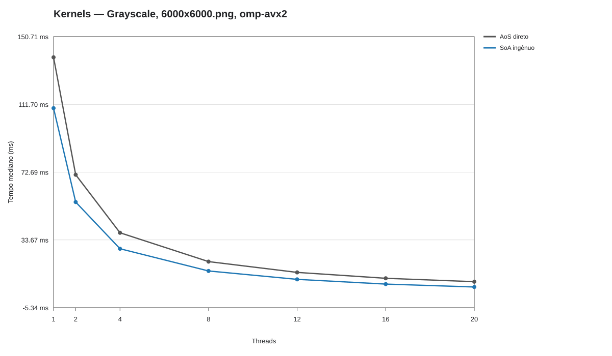
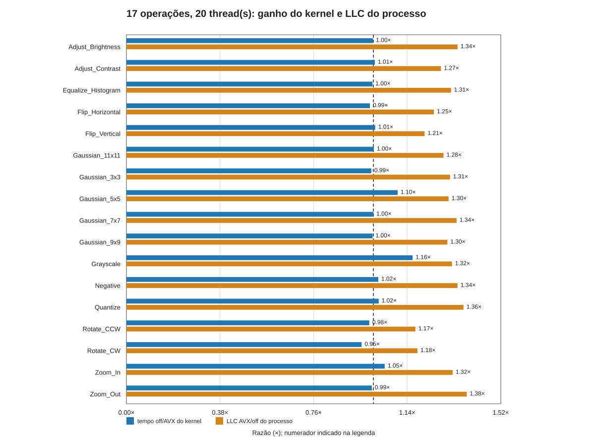

Investigação reprodutível · PCAD hypeGrayscale
O diagnóstico mudou após a refatoração do loop de pixels; as campanhas não devem ser fundidas.
Grayscale ganha com AVX2 no código atual?
confirmadoO que responde
Sim, na revisão atual; o GCC reporta loop de pixels vetorizado em 32 bytes e o assembly inclui rearranjo RGB (`vpshufb`, `vpermq`).
parcialO que sugere
A extração para buffer bruto tornou a vetorização viável; não houve A/B das duas revisões no mesmo job.
abertoO que falta
Se a atribuição causal exata à refatoração for necessária, compilar ambas as revisões no mesmo nó e protocolo.
No job 824454, 78,044/61,115 ms em 1t (1,277×) e 6,165/5,319 ms em 20t (1,159×), dez amostras. No antigo 822851 havia empate.
historico
Kernels — Grayscale, 6000x6000.png, omp-avx2

- Pergunta
- Layout e convolução
- Métrica/eixo
- tempo mediano (ms); Tempo mediano (ms)
- Configuração
- 6000x6000, Haswell/AVX2
- Origem
- Job(s) 822854; 5 por configuração
- Permite concluir
- Layout histórico: útil para discussão AoS/SoA, não substitui o job 824454.
- Ressalva
- Campanha anterior à refatoração do Grayscale; não combinar silenciosamente com o job 824454.
Abrir figura originalTabela de suporteGerador
verificado
17 operações, 1 thread(s): ganho do kernel e LLC do processo

- Pergunta
- Tempo de kernel versus contadores do processo
- Métrica/eixo
- duas razões com numeradores diferentes; Razão (×); numerador indicado na legenda
- Configuração
- 6000×6000, static, 1/20 threads
- Origem
- Job(s) 824454, 824542; 10 tempos e 5 contagens por build
- Permite concluir
- Grayscale acelera sem queda de misses LLC no processo.
- Ressalva
- Tempos de kernel e contadores vêm de jobs diferentes; perf envolve decodificação/hash e os eventos LLC têm multiplexação.
Abrir figura originalTabela de suporteGerador
verificado
17 operações, 20 thread(s): ganho do kernel e LLC do processo

- Pergunta
- Tempo de kernel versus contadores do processo
- Métrica/eixo
- duas razões com numeradores diferentes; Razão (×); numerador indicado na legenda
- Configuração
- 6000×6000, static, 1/20 threads
- Origem
- Job(s) 824454, 824542; 10 tempos e 5 contagens por build
- Permite concluir
- Comparação equivalente em 20 threads.
- Ressalva
- Tempos de kernel e contadores vêm de jobs diferentes; perf envolve decodificação/hash e os eventos LLC têm multiplexação.
Abrir figura originalTabela de suporteGerador
Documentos e código: Tempos e relatório GCC Auditoria de loops Memória
A captura VTune antiga do Grayscale compara CPU time acumulado e tempo decorrido. Mais CPU time não significa necessariamente maior latência do kernel; ela não pertence à mesma revisão da campanha 824454. Abrir captura histórica.
Código: pixels RGB e laço vetorizável
Fonte: image_manipulation.cpp:975–987. O código mostra o trabalho distribuído; a confirmação de vetorização vem do relatório GCC, não do pragma sozinho.
975 void apply_gray_scale_buffer(unsigned char* data, int width, int height) {
976 #pragma omp parallel for schedule(runtime)
977 for (int j = 0; j < height; j++) {
978 OMP_SIMD
979 for (int i = 0; i < width; i++) {
980 int index = (j * width + i) * 3;
981 unsigned char r = data[index];
982 unsigned char g = data[index + 1];
983 unsigned char b = data[index + 2];
984 unsigned char gray = (unsigned char)(0.299 * r + 0.587 * g + 0.114 * b);
985 data[index] = data[index + 1] = data[index + 2] = gray;
986 }
987 }
GCC 824453: o laço de image_manipulation.cpp:979 foi vetorizado em 32 bytes (com caminho de 16 bytes). Relatório GCC completo.
{kind=link}
{kind=link}
{kind=link}